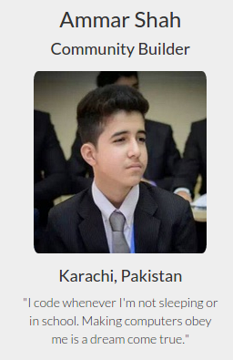

A Year at Free Code Camp

Today is the end of my first year at Free Code Camp.
Let’s take a look back:
Where it all began
One year ago today, I was going through my Facebook feed and saw a post by Zia Khan.
It was an article about the struggle of learning to code.
As someone who had been learning to code since 2012, I was genuinely interested.
I began reading. It was written by Quincy Larson.
Towards the end, there was a link to Free Code Camp.
I decided to sign up, because:
-
It was free.
-
It was a complete full-stack track
-
The founder was self-learned too
Hello World
After signup I was presented with a small getting started video.
I was taken to a chat room where I was suppose to introduce myself.
I did the obvious and posted “Hello World”.
Almost immediately I was welcomed.
That’s the thing that’s really different about Free Code Camp - The Community.
I still remember what was going on when I joined the chat.
I had interrupted a discussion on Pluto between Mark, Kathy and Ryan.
Later on I found out that all three of them were on the volunteer team.
Team FCC

So I continued logging in everyday.
Completing challenges.
Talking to people in the chat.
More and more people joined and I followed suit and began welcoming new people.
I was addicted to the chat, to the people, to FCC.
I would be on the computer all day.
After a month, I knew every single person in the chat - I welcomed more than half of them.
New year came around, 2015.
January 5th.
I got a private message from Quincy Larson.
He thanked me for helping out in the chat.
I was really happy.
He then asked me if I wanted to join the team.
I said yes.
We had a brief Skype session.
He added me to a private “Camp Counselors” room.
He introduced me.
It was official - I was on team FCC.
A year later
Fast forward a year, and here we are.
A lot has happened in the last 11 months.
Free Code Camp has grown to 150k+ campers.
The courses have changed completely.
FCC has enabled people to get jobs.
Basically, FCC is no longer the, small group of people chatting and learning to code, that it used to be.
A lot has change and a lot hasn’t.
- The community is still great.
- When you join, along with people, a bot welcomes you!(That’s 2015 for ya!)
- Free Code Camp is still free and will remain so.
- Free Code Camp is still Open-Source
- Rather than a team of fixed people, FCC now has many people contributing to the community through GitHub.
Conclusion
To sum it up, Free Code Camp has been a great experience.
I’ve managed to learn more in the year at Free Code Camp than I had managed to learn in two years on my own.
Free Code Camp is where it is today, because of the hard work of great people like Quincy, Berkeley and Nathan.
I suggest Free Code Camp to almost everyone who wants to learn to code.
Why?
Join Free Code Camp to find out!
Fell free to contact me on the main chat or in PM. I’m @AmmarAliShah on Gitter :))